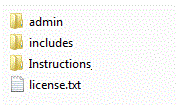
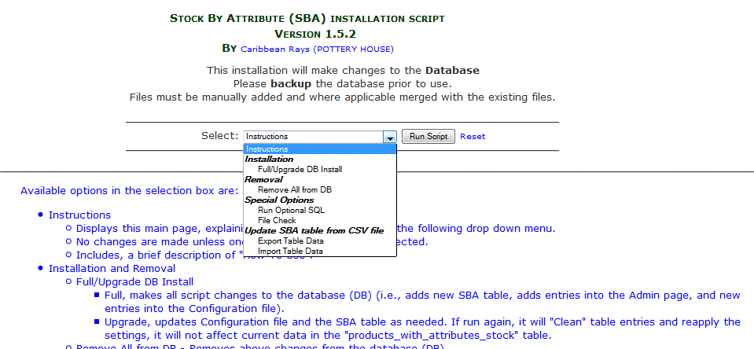
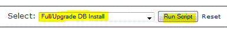
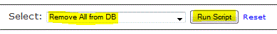

Installation | Configuration | Attribute Stock Setup | Optional Update | Optional Export / Import | Notes | HOME
Installation Process
BACK UP YOUR DATABASE!
Prepare the SBA package for upload to your server by unzipping the mod and renaming the following extracted folders to match your site's folder names:

- Rename admin folder name to match YOUR_ADMIN_FOLDER_NAME
- Rename includes/modules/YOUR_TEMPLATE and includes/templates/YOUR_TEMPLATE to match your YOUR_TEMPLATE_NAME.
If this is a new install of Zen Cart 1.5.1, then with most good FTP programs (such as FileZilla), you can simply drag and drop the admin (renamed to match your admin folder name) and includes directories into the root directory of your site. The files are already arranged in the correct directory structure.
Upload the admin and includes folders.
The "Instructions" folder is for your reference, DO NOT upload it on your website.
Installation File:
The installation file provides options for installing and removing this contribution, it will modify the "Database".
The script does NOT alter or install files, the process strictly makes database changes and some limited verification of proper file placement.
NEW Files:
- admin/ajax/jquery.form.js
- admin/ajax/jquery-1.10.2.min.js
- admin/ajax/products_with_attributes_stock_ajax.js
- admin/products_with_attributes_stock.php
- admin/products_with_attributes_stock_ajax.php
- admin/includes/products_with_attributes_stock_ajax.css
- admin/includes/classes/products_with_attributes_stock.php
- admin/includes/extra_datafiles/products_with_attributes_stock.php
- admin/includes/languages/english/products_with_attributes_stock.php
- admin/includes/languages/english/extra_definitions/products_with_attributes.php
- admin/stock_by_attr_install.php
- includes/extra_datafiles/products_with_attributes_stock_database_tables.php
- includes/functions/extra_functions/products_with_attributes.php
- includes/languages/english/extra_definitions/products_with_attributes.php
CORE Files: (Modified)
These core Zen Cart files need to be modified for this add-on. If other add-ons or customizations of the cart have been done since the Zen Cart installation or upgrade, Check whether they have changed any of the following files:
- admin/invoice.php
- admin/orders.php
- admin/packingslip.php
- admin/includes/functions/general.php
- admin/includes/classes/order.php
- includes/classes/order.php
- includes/functions/functions_lookups.php
- includes/functions/extra_functions/products_with_attributes.php
- includes/modules/pages/checkout_shipping/header_php.php
- includes/modules/pages/shopping_cart/header_php.php
OVERRIDE Files: (Modified)
In addition, files are over-ridden, these files should be placed into the sites template folder:
- includes/modules/YOUR_TEMPLATE/attributes.php
- includes/templates/YOUR_TEMPLATE/templates/tpl_shopping_cart_default.php
- includes/templates/YOUR_TEMPLATE/templates/tpl_account_history_info_default.php
- includes/templates/YOUR_TEMPLATE/templates/tpl_checkout_confirmation_default.php
Optional Language Files:
The following files are provided as examples for customizing to local languages.
- admin/includes/languages/french/products_with_attributes_stock.php
- admin/includes/languages/french/extra_definitions/
- includes/languages/french/extra_definitions/products_with_attributes.php
- admin/includes/languages/dutch/products_with_attributes_stock.php
- admin/includes/languages/dutch/extra_definitions/
- includes/languages/dutch/extra_definitions/products_with_attributes.php
If any of the installed mods have changed any of the core files (or over-ridden files), then merge the changes into the relevant core files.
Once you have backed up your database and website files and this mod has been uploaded, go to a browser and enter: http://YOUR_DOMAIN/YOUR_ADMIN/stock_by_attr_install.php to install SBA and updates to the database. This should work equally well for upgrades as it does for new installs as it makes sure all prior upgrades have been applied.
stock_by_attr_install.php installation offers 6 options:
- Instructions
- Displays this main page, explaining each Script function from the following drop down menu.
- No changes are made unless one of the other options are selected.
- Includes, a brief description of "How To Use".
- Installation and Removal
- Full/Upgrade DB Install
- Full, makes all script changes to the database (DB) (i.e., adds new SBA table, adds entries into the Admin page, and new entries into the Configuration file).
- Upgrade, updates Configuration file and the SBA table as needed. If run again, it will "Clean" table entries and reapply the settings, it will not affect current data in the "products_with_attributes_stock" table.
- Remove All from DB - Removes above changes from the database (DB).
- Special Options
- Run Optional SQL - Makes entries into the new SBA Table (see instructions for more information).
- File Check - Check that NEW Files are in proper places.
- Export Table Data
- Exports the products_with_attributes_stock table as a CSV file.
- Use with the "Import Table Data" option.
- Import Table Data
- Imports the "Quantity" and "Custom ID" fields from a CSV file.
- Update quantity (quantity field) in products_with_attributes_stock table.
- Update customid (custom id field) in products_with_attributes_stock table.
- customid must be unique, may be alphanumeric. NO duplicates permitted.

Installation
selecting Full/Upgrade DB Install and clicking on Run Script, will install / upgrades all necessary SBA Configuration, setup options and the database table required.

Go To Index
Removal
selecting Remove All from DB and clicking on Run Script, will remove all SBA Configuration and tables associated with SBA.

Go To Index
After running http://YOUR_DOMAIN/YOUR_ADMIN/stock_by_attr_install.php, you should get the message, You have successfully installed the Stock By Attributes DATABASE components.
The file "stock_by_attr_install.php" may be deleted. But, a link to this file was added on the "configuration" menu, as the file offers other functionalities described in this guide.
License & Copyright
Zen Cart Open Source E-commerce - Stock by Attributes
This contribution is subject to version 2.0 of the GPL license,
that is bundled with this package in the file LICENSE, and is
available through the world-wide-web at the following url:
http://www.zen-cart.com/license/2_0.txt.
If you did not receive a copy of the Zen Cart license and are unable
to obtain it through the world-wide-web, please send a note to
license@zen-cart.com.